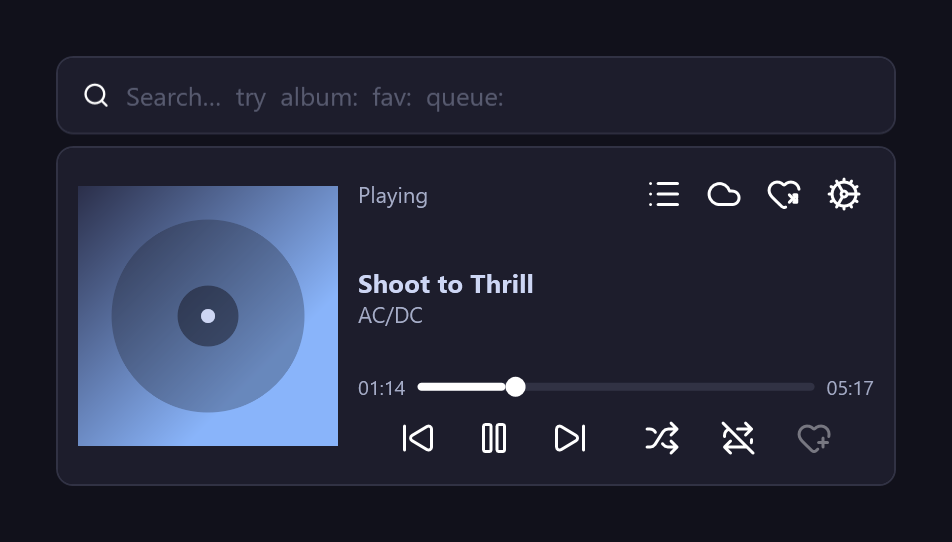
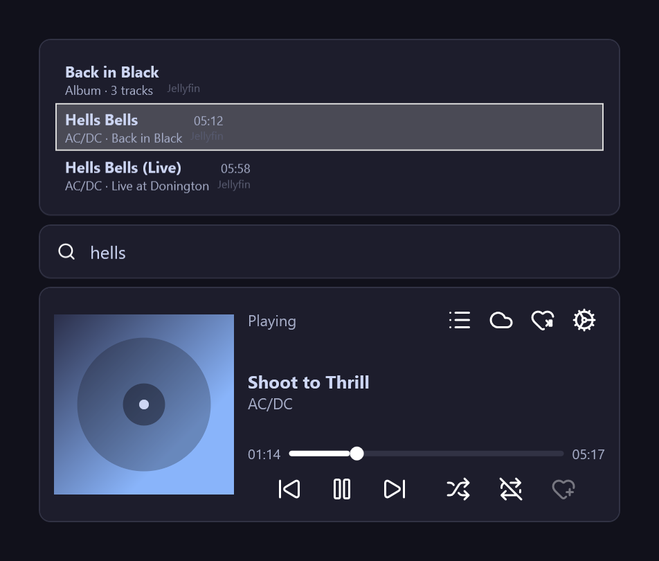
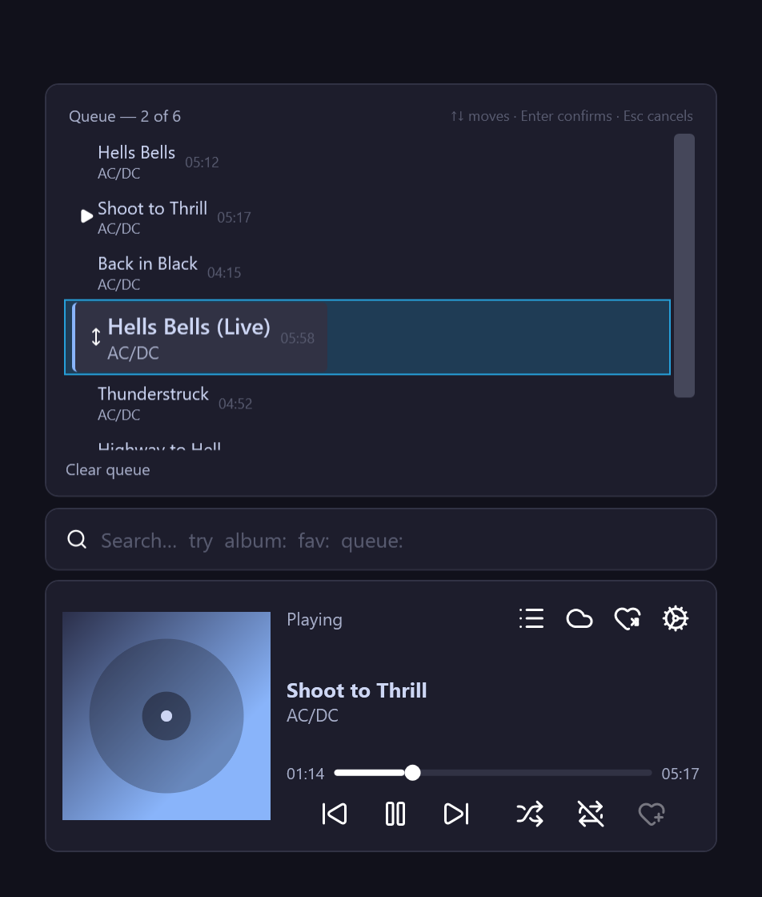
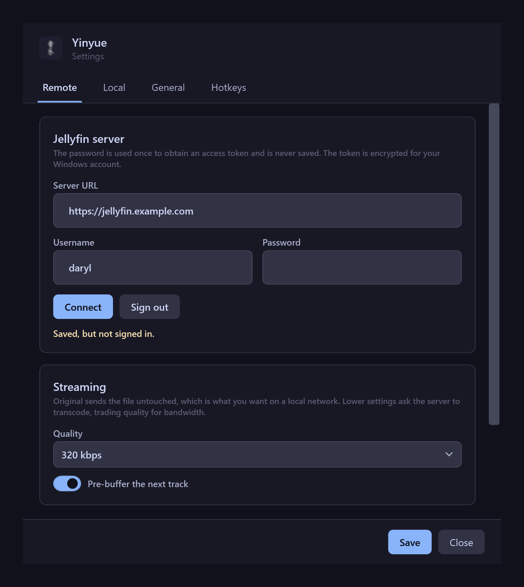

Summon overlay
One global hotkey brings up a small panel anchored to a corner of your screen. It appears, you act, it dismisses.
A music player that lives in your tray or menu bar, not on your taskbar. Press a hotkey, search your Jellyfin server or your local files, play, and it gets out of the way again. The same app on Windows and macOS.
Yinyue starts with your computer and waits in the tray on Windows or the menu bar on a Mac. Everything is reachable from the keyboard, and most of it works without ever showing the window.
One global hotkey brings up a small panel anchored to a corner of your screen. It appears, you act, it dismisses.
Streams straight from your server with no transcoding when the format allows. Favourites, playlists and albums included.
Point it at a folder and it indexes what is there. Local and remote results appear together, duplicates folded.
Every action has a shortcut, and every shortcut can be rebound. Tap for the small thing, hold for the bigger one.
Type album:, playlist:, fav: or queue: in front of a search to look in exactly one place.
Add, remove, reorder and jump, all from the keyboard. Shuffle and loop modes follow you across sessions.
Play, pause and skip from your keyboard's media keys. Windows and macOS both show what is playing, with artwork.
Native on each platform, not a web view in a frame. Idle at zero CPU with a small footprint, all day: a resident app should never be the reason your laptop fan spins.
The applet sits in a corner of your screen. Everything else stacks upwards from it, and disappears with it. Shown on Windows; the Mac app is laid out to the same measurements.




Free and open source, with the same features on both platforms. Installs for the current user only, so it never asks for administrator rights.
14bfa1633f98915c7d3dbaefbb7d3d034d0c647d26f22cd814f95a003dc5e2d809070966bca5b49965c76b3e23c177731ef67188093ab1a7e2d2c5306098512fYinyue is free, open source, and made by one person in the evenings. If it has earned a place in your tray, this is a nice way to say so. No account, no subscription, no features locked behind it.
buymeacoffee.com/valairan →